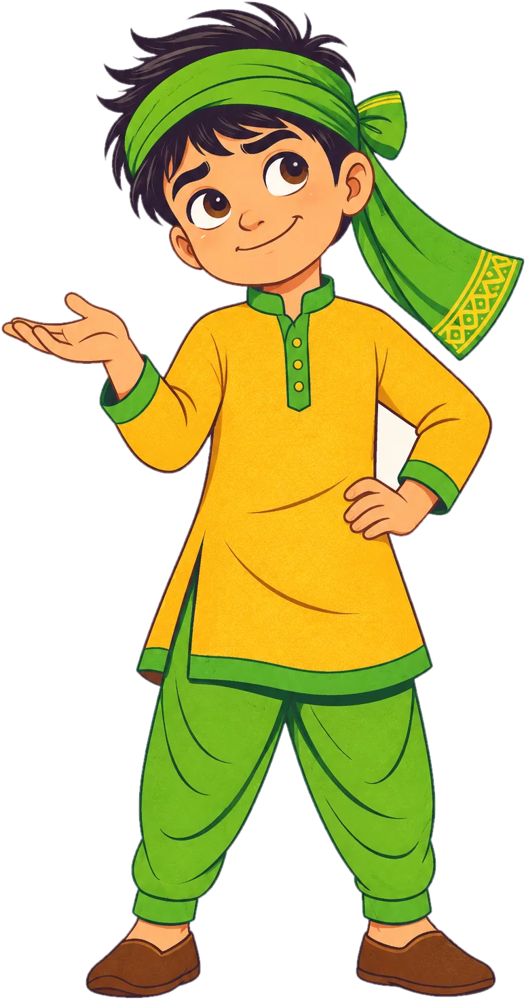
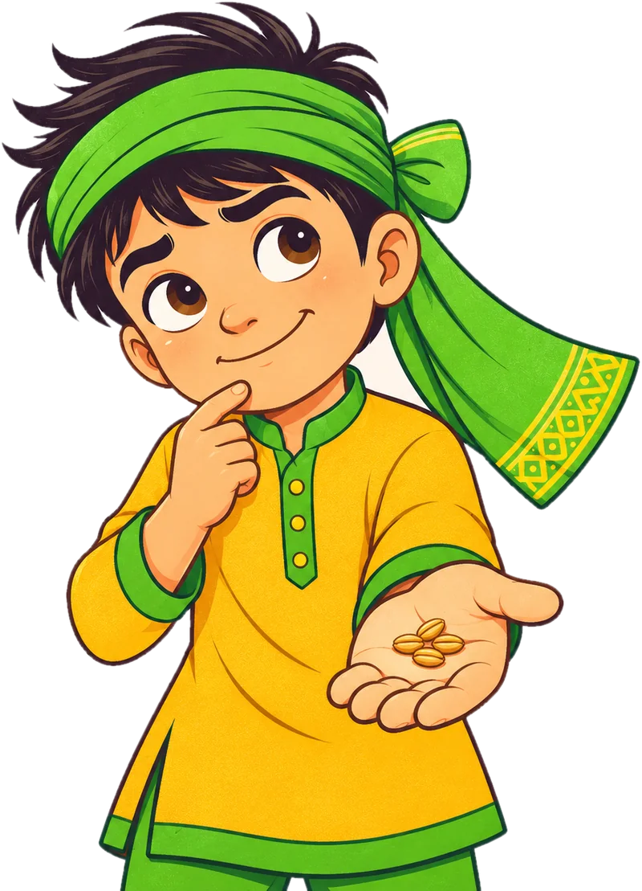

Freshly milled. Delivered weekly.
Atta in its purest form
Ours is milled slowly on natural stone. Fresh, every week.

Concept artWe question everything. Why not atta?
We keep changing everything around us. Our skincare, our cooking oil, even our utensils, because we research what is best for our family. So why don't we stop and think about our atta? Its quality, where it comes from, how it is made. We just take their word for it.
Isse kisi ne poocha?Did anyone ask about this one?

The Atulyash way
Six choices behind our atta. Nothing hidden.
- Illustration
 01
01The wheat
Single-origin MP Sharbati. Never blended with other varieties.
- 02
The cleaning
In several stages.
- Illustration
 03
03The stone
Natural stone chakkis. No emery stone, no steel rollers.
- Illustration
 04
04The chokar
Chokar kept in. Nothing removed, nothing added.
- Illustration
 05
05The milling day
Milled in small batches the day before, delivered the next morning. Packed with minimal handling.
- 06
The delivery
We deliver with our own riders.